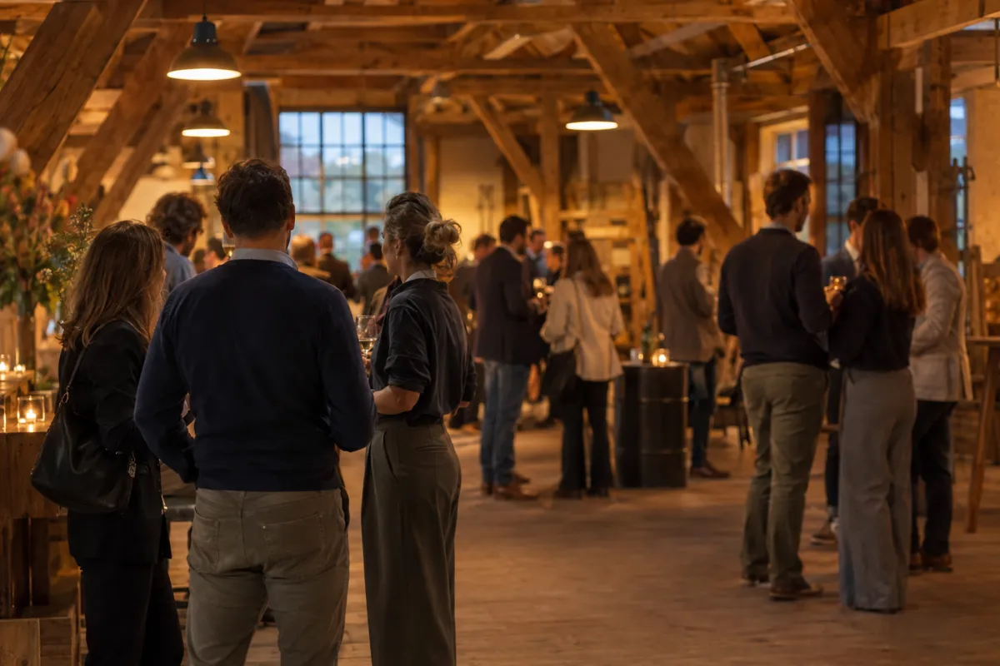

Je leert elkaar kennen als je samen iets doet.
Het lokale netwerk voor ICT-professionals en -ondernemers in en rond Delft. Sinds 2003.
Maandag 7 december17.00 – 19.00 uur · Vakwerkhuis, Delft
Spreker: Jelle Roozenburg (Aanmelder.nl)
Op maandag 7 december verwelkomen we Jelle Roozenburg van Aanmelder.nl bij de ICT-Kring Delft. Hij neemt ons mee in zijn ondernemersavontuur: het verhaal achter het bedrijf, de keuzes onderweg en de lessen die hij heeft geleerd. Een mooie aanleiding om ervaringen uit te wisselen en met elkaar in gesprek te gaan over ondernemen.
Aanmelden is niet nodig. Iedereen is welkom, en een collega-ondernemer meenemen mag altijd.
- Inloop
- Welkom en spreker (30 minuten)
- Borrel
- Einde
- Diner in De Beierd, Markt 5. Voor eigen rekening, iedereen die wil aansluiten is welkom.
Voor ICT-professionals en -ondernemers in en rond Delft
Je werkt in de ICT, of je bedrijf heeft er een stevig raakvlak mee. Je wilt de mensen om je heen beter leren kennen: om ervaringen te delen, elkaar verder te helpen en samen dingen te doen die je alleen niet doet.
- ICT in DelftEen Nederlandstalig netwerk, dichtbij huis.
- Lange ervaring, groot netwerkSinds 2003 komen Delftse ICT'ers elke maand bij elkaar.
- Authentiek, toegankelijk en persoonlijkEchte verhalen van collega's, geen verkooppraatjes.

Elke maand echte verhalen, en meer voor wie dat wil
Maandelijkse bijeenkomst
Elke eerste maandag. Een spreker, verhalen en ervaringen van collega-ondernemers, en een borrel.
Bedrijfsbezoeken
Op bezoek bij een deelnemer, met aandacht voor de uitdagingen achter het bedrijf.
Themabijeenkomsten
Over actuele ICT- en ondernemersthema's.
iSaté
In de zomer maakt de borrel plaats voor een barbecue.
Intervisiegroepen in voorbereiding
In een kleine groep deelnemers met elkaar meedenken.
Studiereis in voorbereiding
Samen op pad om te zien hoe het elders gaat.
Van eerste kennismaking tot samen iets doen
- 1Je wordt warm welkom geheten en voorgesteld.
- 2We vragen wat je zoekt, en wie je graag zou leren kennen.
- 3Elke maand hoor je echte verhalen van collega's.
- 4Wie wil, gaat verder de diepte in.
- 5En op een dag sta je er zelf: met je eigen verhaal.
Value by proximity.
De ICT-Kring Delft is in maart 2003 opgericht door drie Delftse ICT-ondernemers. Het idee: er zitten veel ICT-bedrijven in Delft, en wie elkaar kent, kan elkaar helpen en doorverwijzen.
Dat idee is nog steeds de kern. Waarde ontstaat door nabijheid: door de mensen om je heen echt te kennen.
Bestuur
- Florian HoornaarVoorzitter
- Joris KleinveldPenningmeester
- Michel van LeeuwenSecretaris
Waar we voor staan
- Menselijke maat
- Vooruit willen
- Kundig
- Open
- Hulpvaardig
Aankondigingen en terugblikken
Maandag 7 december: de volgende ICT-Kring
Programma, locatie en het diner na afloop.
Lees verderValue by proximity: waar de ICT-Kring Delft naartoe gaat
Het verhaal van de nieuwe voorzitter, voor wie er niet bij was.
Lees verderWaar we vandaan komen: het begin van de ICT-Kring Delft
Hoe het in 2003 begon, verteld door iemand uit het eerste bestuur.
Lees verderKom gewoon langs
De makkelijkste manier om kennis te maken: kom op de eerste maandag van de maand naar het Vakwerkhuis. Aanmelden is niet nodig.
Vragen, of een idee voor een spreker?
Mail ons op bestuur@ictkringdelft.nl
Locatie bijeenkomsten
Vakwerkhuis, Professor Snijderstraat 2
2628 RA Delft